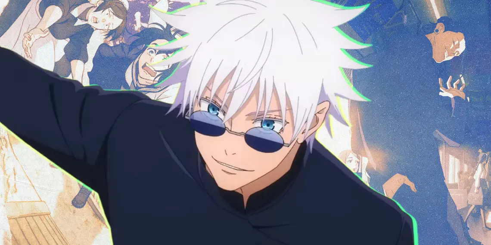

El Chamán Más Fuerte

Satoru Gojo, uno de los cuatro chamanes de Clase Especial. Profesor del Colegio Técnico de Magia Metropolitana de Tokio
Aquí hay una línea de tiempo de Satoru Gojo
- 1989 - Nace Satoru Gojo
- 2006 - Recibe la misión de exorcisar maldiciones en la ciudad de Hamamatsu
- 2006 - Recibe la misión de proteger y escoltar a Riko Amanai
- 2006 - Es atacado por Toji Fushiguro
- 2006 - Asesina a Toji Fushigoro
- 2016 - Se encuentra por primera vez con Yuta Okkotsu
- 2017 - Envía a Maki Zenin y a Yuta Okkotsu a una misión en una escuela
- 2017 - Asesina a Suguru Geto
- 2018 - Es enviado a encargarse de Sukuna
- 2018 - Decide transferir a Yuji Itadori al Colegio Técnico de Magia Metropolitana de Tokio
- 2018 - Satoru Gojo es sellado